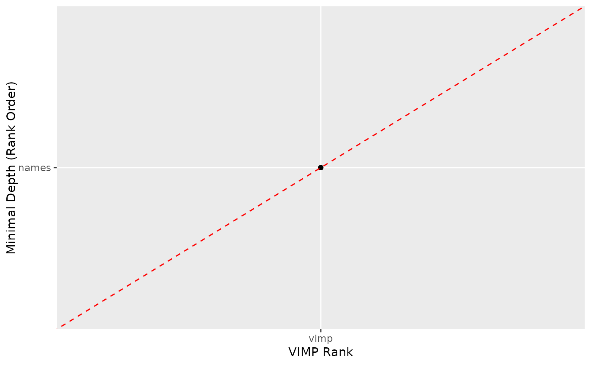

R/gg_minimal_vimp.R
gg_minimal_vimp.RdMinimal depth vs VIMP comparison by variable rankings.
gg_minimal_vimp(object, ...)A rfsrc object,
predict.rfsrc object or the list from the
var.select.rfsrc function.
optional arguments passed to the
var.select function if operating on an
rfsrc object.
gg_minimal_vimp comparison object.
## Examples from RFSRC package...
## ------------------------------------------------------------
## classification example
## ------------------------------------------------------------
## -------- iris data
## You can build a randomForest
rfsrc_iris <- rfsrc(Species ~ ., data = iris)
varsel_iris <- randomForestSRC::var.select(rfsrc_iris)
#> minimal depth variable selection ...
#>
#>
#> -----------------------------------------------------------
#> family : class
#> var. selection : Minimal Depth
#> conservativeness : medium
#> x-weighting used? : TRUE
#> dimension : 4
#> sample size : 150
#> ntree : 500
#> nsplit : 0
#> mtry : 2
#> nodesize : 1
#> refitted forest : FALSE
#> model size : 2
#> depth threshold : 2.1587
#> PE (true OOB) : 0.0467 0 0.06 0.08
#>
#>
#> Top variables:
#> depth vimp
#> Petal.Width 0.978 NA
#> Petal.Length 1.044 NA
#> -----------------------------------------------------------
# Get a data.frame containing minimaldepth measures
gg_dta<- gg_minimal_vimp(varsel_iris)
# Plot the gg_minimal_depth object
plot(gg_dta)

## ------------------------------------------------------------
## Regression example
## ------------------------------------------------------------
if (FALSE) {
## -------- air quality data
rfsrc_airq <- rfsrc(Ozone ~ ., data = airquality,
na.action = "na.impute")
varsel_airq <- randomForestSRC::var.select(rfsrc_airq)
# Get a data.frame containing error rates
gg_dta<- gg_minimal_vimp(varsel_airq)
# Plot the gg_minimal_vimp object
plot(gg_dta)
}
if (FALSE) {
## -------- Boston data
data(Boston, package = "MASS")
Boston$chas <- as.logical(Boston$chas)
rfsrc_boston <- rfsrc(medv ~ .,
data = Boston,
forest = TRUE,
importance = TRUE,
tree.err = TRUE,
save.memory = TRUE)
varsel_boston <- var.select(rfsrc_boston)
# Get a data.frame containing error rates
gg_dta<- gg_minimal_vimp(varsel_boston)
# Plot the gg_minimal_vimp object
plot(gg_dta)
}
if (FALSE) {
## -------- mtcars data
rfsrc_mtcars <- rfsrc(mpg ~ ., data = mtcars)
varsel_mtcars <- var.select(rfsrc_mtcars)
# Get a data.frame containing error rates
gg_dta <- gg_minimal_vimp(varsel_mtcars)
# Plot the gg_minimal_vimp object
plot(gg_dta)
}
## ------------------------------------------------------------
## Survival example
## ------------------------------------------------------------
if (FALSE) {
## -------- veteran data
## randomized trial of two treatment regimens for lung cancer
data(veteran, package = "randomForestSRC")
rfsrc_veteran <- rfsrc(Surv(time, status) ~ ., data = veteran,
ntree = 100)
varsel_veteran <- randomForestSRC::var.select(rfsrc_veteran)
gg_dta <- gg_minimal_vimp(varsel_veteran)
plot(gg_dta)
## ------------------------------------------------------------
## -------- pbc data
# We need to create this dataset
data(pbc, package = "randomForestSRC")
# For whatever reason, the age variable is in days... makes no sense to me
for (ind in seq_len(dim(pbc)[2])) {
if (!is.factor(pbc[, ind])) {
if (length(unique(pbc[which(!is.na(pbc[, ind])), ind])) <= 2) {
if (sum(range(pbc[, ind], na.rm = TRUE) == c(0, 1)) == 2) {
pbc[, ind] <- as.logical(pbc[, ind])
}
}
} else {
if (length(unique(pbc[which(!is.na(pbc[, ind])), ind])) <= 2) {
if (sum(sort(unique(pbc[, ind])) == c(0, 1)) == 2) {
pbc[, ind] <- as.logical(pbc[, ind])
}
if (sum(sort(unique(pbc[, ind])) == c(FALSE, TRUE)) == 2) {
pbc[, ind] <- as.logical(pbc[, ind])
}
}
}
if (!is.logical(pbc[, ind]) &
length(unique(pbc[which(!is.na(pbc[, ind])), ind])) <= 5) {
pbc[, ind] <- factor(pbc[, ind])
}
}
#Convert age to years
pbc$age <- pbc$age / 364.24
pbc$years <- pbc$days / 364.24
pbc <- pbc[, -which(colnames(pbc) == "days")]
pbc$treatment <- as.numeric(pbc$treatment)
pbc$treatment[which(pbc$treatment == 1)] <- "DPCA"
pbc$treatment[which(pbc$treatment == 2)] <- "placebo"
pbc$treatment <- factor(pbc$treatment)
dta_train <- pbc[-which(is.na(pbc$treatment)), ]
# Create a test set from the remaining patients
pbc_test <- pbc[which(is.na(pbc$treatment)), ]
#========
# build the forest:
rfsrc_pbc <- randomForestSRC::rfsrc(
Surv(years, status) ~ .,
dta_train,
nsplit = 10,
na.action = "na.impute",
forest = TRUE,
importance = TRUE,
save.memory = TRUE
)
varsel_pbc <- var.select(rfsrc_pbc)
gg_dta <- gg_minimal_vimp(varsel_pbc)
plot(gg_dta)
}